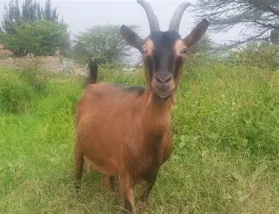
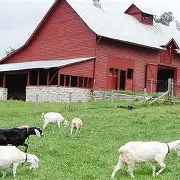
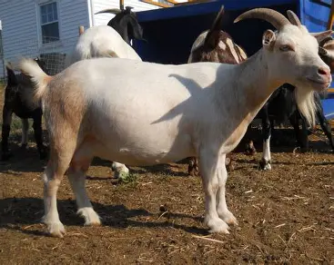
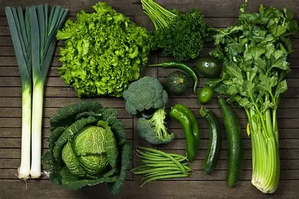
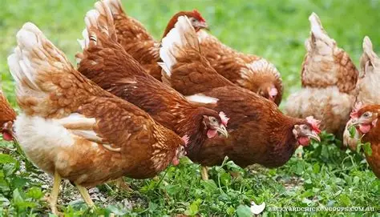
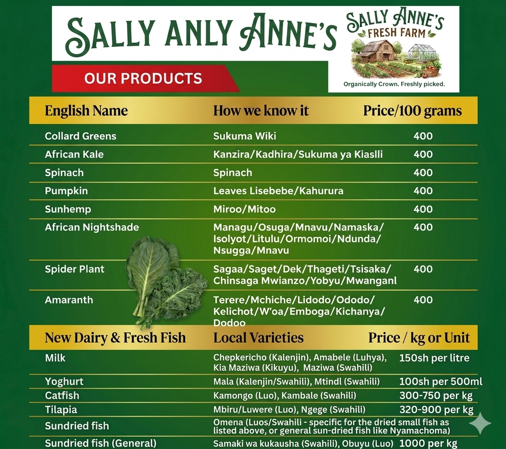

Welcome to the Farm

Sally Anne's Farm is a progressive and diversified agricultural enterprise located in Pap-Onditi, Nyakach, in Kisumu County, Kenya.
The farm is dedicated to producing healthy, high-quality, and value-added farm products that improve nutrition and support sustainable livelihoods.
About Us

Founded with the vision of transforming local agriculture through innovation, Sally Anne's Farm combines modern practices with community-centered values.
Led by a passionate team, with Cyprian Osondo serving as Co-founder, we aim to be a trusted source of nutritious products in Kisumu County and beyond.
Our Specialized Services
Dairy Goat Farming
We rear healthy, well-managed goats for milk production.
Quick Fact: Goat milk is highly digestible and nutrient-dense.

Fresh Leafy Vegetables
We cultivate fresh greens grown with care to ensure taste and nutritional value for households and markets.

Poultry Farming
Our farm produces high-quality poultry products, including fresh eggs and chicken.

Our Farm Products
